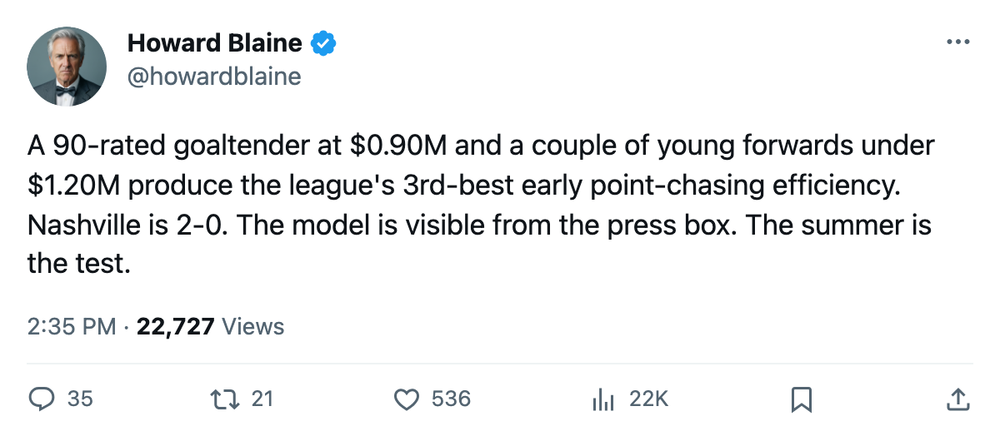

The $12.85M Point: Nashville Sits Tied for First in the West on a Goaltender Who Costs Less Than a Fourth Liner
Two wins, 4 points, and a payroll so efficiently allocated that three contracts carry what the other 29 clubs cannot replicate. The problem arrives in the summer.
 Howard BlaineSenior writer, The Blaine Rankings · The Hockey Gazette
Howard BlaineSenior writer, The Blaine Rankings · The Hockey Gazette
 Nashville Predators has played 2 games, won 2, and produced 4 points on $51.38M in payroll. The cost per point sits at $12.85M, behind only
Nashville Predators has played 2 games, won 2, and produced 4 points on $51.38M in payroll. The cost per point sits at $12.85M, behind only  Pittsburgh Penguins at $12.23M and
Pittsburgh Penguins at $12.23M and  Los Angeles Kings at $12.70M in the early league-wide standings, and ahead of the two clubs that split the Cup Final last spring. The Predators are 1-0 at home, 1-0 on the road, and tied at the top of the
Los Angeles Kings at $12.70M in the early league-wide standings, and ahead of the two clubs that split the Cup Final last spring. The Predators are 1-0 at home, 1-0 on the road, and tied at the top of the  St. Louis-led Central Division with 7 goals for and 5 against.
St. Louis-led Central Division with 7 goals for and 5 against.
The contracts show where the return comes from.  Tomas Vokoun90, a 90-rated goaltender, costs $0.90M per season with 1 year left on his deal.
Tomas Vokoun90, a 90-rated goaltender, costs $0.90M per season with 1 year left on his deal.  Scott Hartnell82, a 23-year-old left wing rated 82, costs $1.10M with no contract past this season. The man the desk profiles on a separate page, a left wing rated 84, costs $0.60M and is likewise on a deal that ends after 2005-06. Three bargains, none at a salary any of the other 29 clubs pays a fourth-line forward, sit at the top of a roster whose single largest commitment goes to center David Legwand at $8.37M.
Scott Hartnell82, a 23-year-old left wing rated 82, costs $1.10M with no contract past this season. The man the desk profiles on a separate page, a left wing rated 84, costs $0.60M and is likewise on a deal that ends after 2005-06. Three bargains, none at a salary any of the other 29 clubs pays a fourth-line forward, sit at the top of a roster whose single largest commitment goes to center David Legwand at $8.37M.
Load the top of the depth chart with young players on cheap entry deals, spend the surplus cap space on two or three veterans, and run on goaltending and defensive structure. Nashville finished last season with 101 points, 7th in the league, and won 1 game in 6 playoff appearances before the spring ended. The 2-0-0 start is the 2nd winless streak for a club beginning its season this year; the Predators have not lost yet.
The summer reckoning
The same contracts that produce the league's third-best efficiency now produce the franchise's central problem. Hartnell has 0 years remaining. The left wing at $0.60M has 0 years remaining. Defenseman Kimmo Timonen, rated 75, costs $1.00M and carries 0 years. Center Greg Johnson, rated 80, costs $1.60M and carries 0 years. Right wing Scott Walker, rated 83, costs $1.80M and carries 0 years. Defenseman Oleg Tverdovsky, rated 80, costs $4.00M and carries 0 years.
None of those six men has a contract past June. The combined value of the players rated 82 or above on expiring deals is visible in the upper-left quadrant of the chart: a 90-rated goaltender with 1 year left (safe for now), an 84-rated left wing at $0.60M, and Hartnell at $1.10M. If the franchise re-signs them, the new deals will carry the salaries the rest of the league already pays for production at that level. If the franchise does not, the $12.85M point is a 2-game artifact.
The club's revenue is $31.28M per season and its profit is $22.35M, which means the payroll grows only if ownership reinvests that margin. Nashville's ticket price is $82, the same as  Minnesota Wild and
Minnesota Wild and  Colorado Avalanche, well below
Colorado Avalanche, well below  Toronto Maple Leafs at $112. Attendance is 14546 per game. The market generates the cash to pay these men their market value; whether the franchise chooses to is the open question.
Toronto Maple Leafs at $112. Attendance is 14546 per game. The market generates the cash to pay these men their market value; whether the franchise chooses to is the open question.
What the record says about small payrolls in October
Nashville's $51.38M is the 24th-largest payroll in a 30-club league. The 3 clubs below it in cost per point, Pittsburgh and Los Angeles, carry payrolls of $48.92M and $50.80M respectively. All three of the league's most efficient point-chasers after 2 to 4 games play in markets that generate under $33M in revenue and survive on payroll restraint.
The 4 clubs with the worst per-point costs after their early starts are Colorado Avalanche at $34.05M,  New York Islanders at $30.51M,
New York Islanders at $30.51M,  New Jersey Devils at $29.25M, and
New Jersey Devils at $29.25M, and  Washington Capitals at $28.44M. None of those four has played more than 2 games. Early-season arithmetic is unreliable; what holds is the contract structure underneath it. Nashville has built a roster whose floor is set by Vokoun's ability to carry 65 games and whose ceiling is set by whether the organization pays Hartnell $3M in July or finds a replacement at $1.10M.
Washington Capitals at $28.44M. None of those four has played more than 2 games. Early-season arithmetic is unreliable; what holds is the contract structure underneath it. Nashville has built a roster whose floor is set by Vokoun's ability to carry 65 games and whose ceiling is set by whether the organization pays Hartnell $3M in July or finds a replacement at $1.10M.
The next game is Tuesday at New Jersey Devils, a first meeting between two clubs that are each 1-1. New Jersey has played 2 games and carries a $58.50M payroll. The cost per point there is $29.25M.
